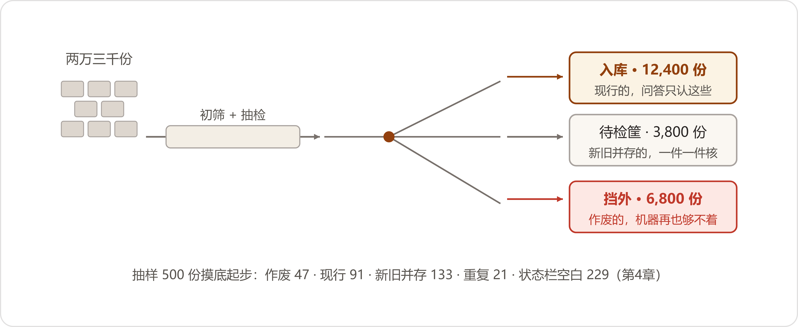
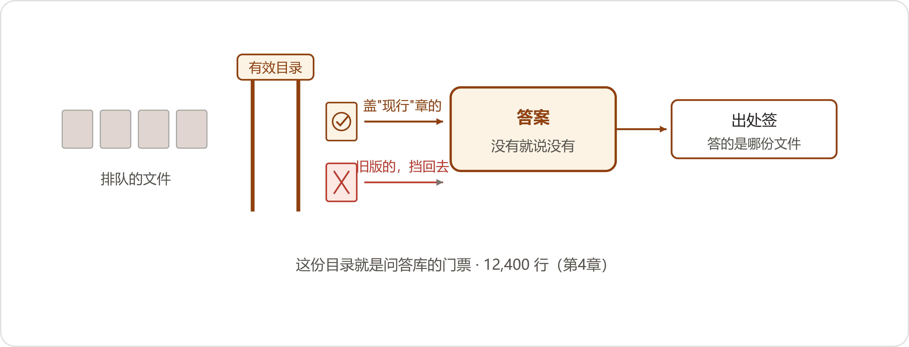

Twenty-Three Thousand Documents
五月六日，星期三。
早上八点二十，小夏把三页打印纸放在陈临桌上。纸还带着打印机的热乎气，角落里那台打印机嗡嗡地收尾。她眼下发青——五一假期，她有三天泡在公司跑脚本。
三页纸，标题是《文档库抽样检查报告》。她从两万三千份文档里随机抽了五百份，先让模型逐份判状态，再自己人工复核了其中一百份。要紧的数字，她用红笔勾过。
五百份里，文件头部带着明确"作废"或"被替代"标记的，四十七份——其中三十八份，就躺在网盘里标着"现行"的目录底下。能和质量系统的发布记录自动对上号、确认现行有效的，九十一份。有一百三十三份，按文件号反查，库里还存着同一个编号的别的版本，新旧并存，机器说不清哪份算数。还有二十一份，模型比对下来，和库里别的文件内容一字不差，只是文件名不同。小夏在页脚补了一行小注："前四类按状态分，互斥；重复件是另算的一刀，跟状态有交叠——二十一份里，有十四份本身就躺在'状态栏空白'那一堆里。所以各类数加起来不是五百，账是通的。"
"最要命的是这栏。"小夏翻到第二页，指着一张扫描件截图。那份文件的头部状态栏整个是空的，页眉歪着，章糊成一团。五百份里，状态栏空白或者扫得看不清的，二百二十九份。"文件自己不说自己是死是活。模型不是判错了——它是没得判。"
陈临把三页纸从头看了一遍，问："结论呢？"
"结论就一句：上回吴师傅那事，不是运气差。"小夏说，"这种库，谁来答都得错。错在哪一条，看运气。"
陈临没接话。他把第三页又翻回去，看那个数字：三十八份作废件，躺在现行目录里。董事长那句话在耳朵边上：上了线就不能再出这种事，一次都不行。四月二十七号从档案室回来，他在蓝皮本上写过一行字——先说清楚什么算数。字是好写；可事情从哪儿下手，这两个星期他一直没摸着门。
"这个事，数字办关起门干不了。"他把三页纸摞齐，"要动质量部和技术部。周一我约会，你把报告再核一遍，一个数都不许有出入。"
五月十一日，协调会开在三楼小会议室。到会的有郑敏、方致远、小夏，陈临主持。赵峰头一天就打了招呼："会我不去，吵不出代码。要我干啥，派活。"
会头十分钟，过的都是数。小夏把抽查报告投在幕布上，一页一页过：五百份，四十七份作废，其中三十八份躺在现行目录里；一百三十三份新旧并存；二百二十九份状态栏空白。看到扫描件那页，方致远的身子往前倾了倾，指着其中一份问："这份，是不是二二年作废的那版试车规程？"
小夏低头对了对："是。上回发给江西的，就是它。"
方致远没再说话，把手里的笔横过来，在笔记本上搁平。
郑敏先发言。她把一沓打印件在桌上摆开：质量系统导出的现行受控文件清单，一万一千多行。方致远等她说完，才把胳膊底下夹了一个钟头的一摞技术底档和一个绿皮登记本取出来，胳膊放下来的时候，半边肩膀都是麻的。他把底档一张一张码齐，登记本搁在最上头，才坐下开口。
"先说好，我不是来吵架的。"他说，"建目录，我支持。但有一条，不能一刀切：QMS里没有的，不等于没用。"
郑敏的手指在清单上按住："方部长，受控文件的规矩摆了八年。发布、换版、作废，一律走文控平台，程序文件写得清清楚楚。你现在跟我说，平台外头的也算数？"
方致远没接这个话头。他从码齐的底档里抽出两份，并排推到桌子中间。同一个编号，《输出轴装配工艺卡》，一份是QMS里的现行版，一份是技术部底档。他点着底档上一行手写批注：
"二四年八月，输出轴轴承的预紧力矩，设计上要调。走QMS换版，编制、校对、审核、批准，四级签字，凑齐一回半个月。当时主机厂催货，等不起。我开了技术联系单，车间按新力矩执行，执行到今天。"他抬起头，"QMS里那份，还是老数。你们按QMS建目录，这条就得标'作废'。系统把老数答出去，客户照着拧——出了事，算谁的？"
"算你没走流程！"郑敏的声音一下起来了。她翻开自己的本子，"批注在车间挂了一年多，为什么进不了QMS？四级签字半个月，那是你流程走得慢，不是流程错！急件有急件的路——联系单七日补录，制度上写着呢，你们补了吗？去年内审我记着账：临时更改事后补录的，不到一半。审核员较真起来，不符合项开在我质量部头上。"
方致远没接她这个火。他端起茶杯喝了一口，把杯子放回杯垫正中，才慢慢讲："前年外审，审核员在装配线边上拦住个装配工，问：你按哪份文件干？装配工指了指墙上贴的工艺卡。审核员回头去QMS里调——对上了。为什么对上了？审核前一个礼拜，我让技术部连着加了三个晚上的班，把三张挂着的联系单补录进去了。要没那一回补，前年的不符合项就开在青山。"他把杯子又挪正了一点，"郑部长，账你是记着的。补，是我们人工补的，一年补一两回，审核前突击。这叫管住了吗？"
郑敏的嘴唇动了动，没出声。这个话她驳不了——内审报告里那句"临时更改补录不及时"，写了三年，每年原样再写一遍。
"所以我把本子带来了。"方致远把绿皮本往桌子中间推了推，"二三年到现在，一百三十七张联系单，都在这。我要说的是另一件事。文件在车间是活的，今天改一处，明天改一处；在你们系统里，它一年动不了一回。你先回答我——系统敢不敢答一个和车间实际不一致的数？"
屋里静了几秒，墙上挂钟走针的声音听得见。
陈临把白板笔的笔帽拔开，攥在手心里，走到白板前。
"两位，我说句题外话。四月二十七号我去了趟档案室，叶老讲了一句话，我当时没听透。他说，东西多了，就得先说清楚每样东西是什么、跟谁有关系——这个问题不解决，买什么系统都是白买。"他把笔尖在白板上点了点，"我回来想了半个月，想出来就是五个字：什么算数。今天你们吵了一个钟头，吵的就是这五个字。那现在就把它说清楚，写下来。"
他在白板上写了三条。
第一条：QMS为唯一发布源。今后工艺、规范类文件，不进QMS不发布。急件先走技术联系单，七日内补录，超期按文件失控考核。
第二条：存量底档，逐份认领。以今天为界，技术部把QMS之外的底档列成清单，每份签字认领，五月二十五日前补完流程。补完之前，一律标"存疑"，不进问答库。到期没人认领的，按作废处理，车间停用。
第三条：建有效文件目录。每份文件一行——编号、名称、版本、状态、生效日期、责任人。目录里有的，才许进问答的库；目录里标"现行"的，检索才许用。
写完他补了一句："这份目录，就是问答库的门票。"
方致远盯着第二条看了很久。他把打印好的认领清单折了两折，用指头顺着折痕压了压，才放进包里，站起来："两周，我认。丑话说在前头——补录是我们加班补，可审核档案里，这批更改得记成'历史遗留'，不能算技术部新增失控。"
"可以。"郑敏接得很快，"内审报告我来写。但你的人签字，一张都不能少。"
散会的时候，方致远走到门口，回头对陈临说："你们那个系统，这回要是再把废文件答出去，我可就不留情面了。"
郑敏收拾她的清单，跟陈临说了句实在话："目录建起来，我那本受控台账也跟着清爽。外审年年抽这个，我巴不得。"
会开完，账就摆上桌了。两万三千份存量，QMS外头的底档一千多份，技术部为这个搭进去一个工艺员。小夏算过另一笔账：就算只清"存疑"，四个人，一人一天一百二十份，全过一遍也要四十多个工作日——清到猴年马月。
五月十二日晚上，她把笔记本转过来给陈临看。屏幕上是她画的三栏：明确现行、明确作废、存疑待人工。
"让模型先分诊。"她说，"按咱们定的规则先过一遍，说得清的归拢，说不清的丢给人。人只看存疑那一堆。"
赵峰正好来交脚本，人凑到屏幕跟前扫了一眼，把鼠标往边上一推："拿AI清喂AI的粮，你们起的名倒顺口。行，我只管能脚本化的：比对文件号、扫版本、按内容算校验值。"第二天他的脚本跑完，全库揪出一千九百多份内容一模一样的文件，文件名没有两个是相同的。他把结果甩到群里，附了一句话："文档这玩意儿，连个主键都没有。你们这张目录，就当主键使。都按目录来。"
小夏对了对数：抽五百份只逮着二十一份重复，照这个比例推全库该是九百多份，实际一扫出来一千九——差出一倍。她想了半天，在报告里写了一行注：抽样那回，重复是模型认出来的，认出一笔记一笔，认不出的就当它独一份；全库扫描是拿校验值一对一对硬碰的，一份不漏，一式三份的计三份。两头口径不一样，账还是通的。
第一轮分诊跑完是五月十三日。结果不好。明确现行九千二百份，明确作废三千八百份，存疑一万份——快一半存疑，等于没筛。更要命的是抽检：每类抽八十份人工核，一百六十份里错了三十一份，将近两成。
错得都很具体。小夏把两份错例投在大屏上。头一份，《齿轮材料选用规范》，明明现行，正文里引了五条旧国标，每条后头注着"已作废，仅供参考"——模型数出五个"作废"，判了整份作废。第二份是扫描的《试验大纲》，第二版的修订记录页装订在了第一版前头，模型把修订表里的历史版本号当成当前版本，证据句引的页码都是错的。
她把判定规则改了三处，写进给模型的说明里：只认文件头部受控栏的状态和编号；正文里出现的"作废""替代"字样，一律不算证据；修订记录页单独剥出来，不参与判定。
接下来又跑了两轮，每轮照旧抽一百六十份人工核。到第三轮，明确类一万五千七百份，存疑压到七千三百份，抽检错六份。
"三个多点的错判率，敢用吗？"赵峰问。
"存疑的都给人。明确的我天天抽——每天开工前抽四十份，错超过两份，当天机器判的全部作废重判。"小夏说。
赵峰没再抬杠。临走他撂下一句："我把话搁这儿。文档清得再干净，也是一次性干净，新文件一来又是新账。真要让机器认得厂里的事，得靠有结构的东西——反正不是这一堆文档。"
七千三百份存疑，从五月十八日开始清。小夏、陈临、质量部的小何、郑敏又抽来的一名文员，加方致远派的工艺员老鲁，五个人。复核不复杂：打开文件，先看头部受控栏，再拿文件号去查QMS，对不上就标一笔。这道活不难，就是量大。陈临那阵子下了班，眼皮一合，满屏都是受控栏。小何一天看一百一十份，看到后头眼睛发酸，桌上立起一瓶眼药水；老鲁抱着一摞底档对联系单，对到五月二十九日才清完他那一份，比会上定的期限晚了四天。方致远在群里没吭声，转天往质量部送了一箱酸奶。
五月二十日，三车间的工艺员小蒋冲进数字办，手里捏着一张打印纸，拍在小夏桌上："这是什么意思？我们线上天天在用的工艺卡，你们标了个'存疑'，问系统系统不答。线上现在照它干活呢——你们的意思是，我们一直在用废纸？"
小夏调出记录：那份《法兰盘焊接工艺卡》，QMS里查无此件，车间墙上挂的这份是技术部九年前直接发的底档。按新规矩，没认领补录的，一律"存疑"，进不了问答库。
"规矩是规矩，可它先来的。"小蒋不吃这套，"文件在墙上挂了九年，产品干出去了几万台。你一句话，它成黑户了？"
郑敏闻讯过来，站在两人中间看了两分钟，把小蒋领去技术部。当天下午，方致远从底档柜里把那份卡的原签件翻出来，走应急通道补了录——编制人签字还在，是位调去分厂的老工程师，电话打过去，对方在那头笑："我签的，我记得。"挂了电话，流程补完，状态从"存疑"翻成"现行"。
第二天，小蒋又来了一趟数字办，这回是道歉的。他放下一袋洗干净的工件手套，说："主任说了，往后我们车间的底档，先自己过一遍再给你们——省得又当黑户。"说完就走。陈临留了个心眼，让小夏把这事记进台账：挡在库外的每一份"存疑"，背后都可能有一条正在跑的生产线——名单每周给各车间主任过一遍，谁家有意见，三天内提。
头一回每周发放，是五月下旬一个周五。小夏照例把存疑名单发进车间主任群，三车间的文员回了张截图——有人把"存疑"的红标拍了下来，配了四个字：黑户办证处。群里静了一下。小夏把截图存下来，拿给陈临看。陈临看了两秒，说："先记着。"
存疑的文件，什么样的都有。五月二十一日晚上九点过，质量部那排灯还亮着，小何面前摊着一份《外购件进厂检验规程》，编号对得上，版本栏印着"第二版"，可QMS里这文件只发过一版。她查发放号，翻旧台账，又打电话问了退休的老文控，最后才对出来：一九九六年手工誊抄的存档件，编号是照当年的老规矩编的。标"历史件"，挡在库外。这样的件，七千三百份里前后挑出来两百多份。
六月三日晚上，最后一栏状态填完。两万三千份：判"现行有效"进问答库的，一万二千四百份；明确作废和被替代的，六千八百份；剩下的参考件、外来标准文本、说不清的，三千八百多份，全部挡在库外。
有效文件目录第一次凑齐了。一张Excel表，一万二千四百行，挂在陈临的共享盘里。
存疑清单清到一半，小夏跟陈临提了个要求。
"协调会上，我问不出东西了。"她说，"联系单、补录，这些词我在会上都听过了。可文件到底怎么发的、卡在哪，我没见过。让我去文控坐两天，跟着小何干活。"
陈临给郑敏打了电话。郑敏在那头笑了一声："来啊，文控正缺人手。"
五月十九日一早，小夏搬着笔记本坐进质量部里间的文控室——上午跟着小何看流程，下午抱电脑回数字办清存疑件，两头倒。文控室两排铁皮柜，一张旧办公桌，一台针式打印机。小何管文控三年，二十七八岁，桌角贴着一张流程便签，字都磨淡了。那台针式打印机隔一阵响一回，噼里啪啦打一行，停一行，整层楼的动静就数它大。
头一天，一份《JS-1100装配工艺卡》换版。小夏在旁边看完全程：OA（办公自动化系统）里接发布申请，核对编制、校对、审核、批准四级签署；传QMS（质量管理系统），系统生成受控编号；打印一份，盖受控章存档；更新发布清单——也是张Excel表；再给六个车间的文员发领取通知。前后四十来分钟，中间小何接了三个电话。
转天下午，轮到看旧版回收。QMS里点一下"作废"，改的只是系统里的状态。共享盘里那份电子旧版还躺在老目录里，谁都能下载，没人删。纸件靠各车间在《文件回收记录》上签字交回，装配车间三月份发的那批，签收联到今天没回来。小何拉开抽屉，里头有个牛皮纸袋，装着七八张没回来的签收联。
"催过吗？"小夏问。
"月月催。"小何把抽屉推上，"车间说纸早找不着了。找不着就给我签个'遗失'呗——那也得人家肯签啊。"
第二天，方致远把那个绿皮登记本送了过来，小夏从头翻了一遍，一张一张数：二三年以来一百三十七张技术联系单，页边用红笔标"已补录"的，五十九张。没标红的，她全抄了下来，抄满三页纸。
五月二十一日，她回数字办汇报。三页纸在陈临桌上摊开，她一条一条指过去，语速很快：
"QMS管住的是纸，管不住共享盘，也管不住联系单。咱们的文档库，当初是从共享盘整个搬过来的——等于把没管住的那部分，原样喂给了模型。"她翻到第二页，"所以光有目录还不够，检索得改三处。"
一，检索之前先过目录：库里只留"现行有效"，作废的、存疑的、参考件，从一开始就不许进检索。二，答案强制带出处：文件名、编号、版本，从目录里带出来，答题必附，点了能看原文扫描件。三，库里没有的，明说没有，给最接近的文件让人工确认，不许硬编。
"第三条是我自己加的。"她说，"上回输，就输在它没有'不知道'这个选项。"
陈临看着那三页纸。协调会开了两个钟头，他没听到过一条这么具体的意见。
测试集这个念头，是赵峰先提的。
五月二十六日碰头，他往桌上一拍："题不能你们自己出。自己出题考自己，跟考前先看卷子一样。"
他把上回下线前的六百三十四条问答记录导了出来，加上客服部的工单二百一十七张。小夏写脚本归并——"低温用什么润滑脂""冬天加几号脂""零下二十度选脂"，并成一道。最后并出一百九十七个独立问题，按频次排序，取前一百。
判卷人不属于数字办。质量类的题郑敏认了，工艺类的老鲁认了，每道题写标准答案，标依据文件和条款。第一名不用商量：低温工况润滑脂，合并频次二十九次，工单里出过七回。
规矩就一句话：这一百道题，答不对，不上线。
第一轮，六月四日，七十八分。错的二十二道，小夏拉着老鲁一道一道剖：九道是目录错标，复核时手一滑，两份同一天换版的文件，版本号填反了；五道是切片把条款里的表格切丢了；四道检索排序，内容相近的参考件排到了正文前头；四道答案拼装，把两份文件的话捏成一句说。毛病出在库和目录上，没出一道在模型上。回去改目录，改切片，把参考件整个挡出检索。第二轮，九十一分。第三轮，六月八日，一百。
分数出来那会儿正是早饭点，群里静了几分钟。赵峰先冒的头："先别高兴，夜里回归再说。"
从那晚起，赵峰搭了个定时任务，每天夜里两点把一百道题自动跑一遍，结果发进群里。头一晚全绿，他发了两个字："可以。"
复测定在六月九日。复测的邀请，是陈临五月二十九日打电话去发的；电话那头沉了几秒："考你们系统？行啊。我出题，你们别提前问我要。"陈临随后给刘振邦报备，刘振邦在电话里也没绕弯子："该的。"
六月九日下午两点，售后会议室里立着大屏，视频连着线，吴师傅那头的背景是机修班的工具柜。客服部主任坐在边上，小夏操作，陈临和郑敏列席。连线调好之前，小夏把键盘往自己跟前挪了挪，手心在裤腿上擦了一把。
吴师傅从工装上衣口袋里摸出一张折成四折的纸，展开，用大拇指把折痕捋平了，念第一道。十道题是他自己攒的：矿上在用的三台JS-1100，一台老提升机，还有一台别厂产的减速机，全是日检年检里悬着的实际问题。一道一道来。念到第八道，他抬起眼：
"JS-1100，冬季低温工况，室外零下二十五度，推荐用什么牌号的润滑脂？"
会议室里没人出声。小夏把问题敲进去。答案两秒出来。
吴师傅凑近屏幕，让小夏把出处点开。原文扫描件放大，他盯着页眉的受控章和编号看了十几秒，又让翻到第4.2条，一个字一个字对完，才靠回椅背。
"2024版的。"他说，"行。"
十道题问完，八道带着出处答了，两道系统明说不知道。其中一道是那台别厂减速机的，屏幕上答："知识库中没有找到该型号的直接依据。最接近的文件为《矿山提升机减速机维护导则》（参考件，未经受控），建议转售后服务人工确认，两个工作日内回复。"
吴师傅把那张四折的纸重新折好，装回口袋，才对着摄像头开口："上回它坏，就坏在不知道也答。这回不知道就说不知道——这条值钱。"他停了停，又补一句，"这回像话了。"
末了他提了个要求：把今天的问答连出处页导出来给他。"我回封邮件，抄送给上回那位采购总监。上回让人看了笑话，这回得让人看看。"
临下线，他又问了一句："这玩意儿，我们车间师傅自己能问不？"
"月底验收以后，给客户开口子。"陈临说。
"到时候把话捎给我。"
上线是六月十日早上八点半。这回没有发布会，也没有剪彩。陈临只开了内部员工和客服两个入口，外部客户那道门，留到月底验收以后再开。
点发布之前，小夏问了一句："陈主任，您手抖不抖？"
"抖。"陈临说，"点吧。"
按钮是小夏点的。这版系统除了问答，底下还挂着个不起眼的入口——"图纸资料测试口"，是小夏顺手开的：传张图进去，模型试着读一读、说一说。没人拿它当正经功能，页面角落一行灰字：测试用途，仅供参考。
上线头一个小时，第一个问题从客服通道进来："JS-1100的油位计怎么安装？"三秒，答案出来，末尾挂着《安装维护手册》的编号和版本，点开是原文扫描。客服部主任截了图发到客服群里，配了半句话："都看看，这比咱们新来的娃娃利索。"头一天下来，四十来条提问。往后一天比一天多，到上线后一周，日均一百三十条上下。每条回答底下两个按钮：有用，没用。旁边一行小字：答案有误？点这里上报。
头五个工作日，"有用"按了六百多次，"没用"四十七次，上报单来了十一张。小夏每天早上九点到十点雷打不动，处理前一天的反馈，台账一行一案：七条是长尾——问老机型、问改制件，库里本来就没有对应文件，有人问一台九八年出厂的提升机减速机，库里最老的手册是零四年的；其中两条转给老鲁，从技术部底档里翻出文件补进目录，剩下五条挂进"待补"清单；三条目录错标，复核时看走眼的，改目录，当晚生效；一条把参考件带进了答案，过滤规则又收紧一格。
百题回归连着六个晚上全绿。
"高频稳了。"六月十六日一早，小夏把台账给陈临看，第十一行刚销掉，"长尾的，我不敢打包票——库里没有的东西，它现在起码不装知道了。错一条，我修一条。"
陈临翻那本台账。十一行，每行都有下落。第十一行是当天的：三车间一名工艺员问新冷却液的配比浓度，系统引的是三月的旧规程。小夏查了记录——新规程六月五号就发布了，QMS里有，目录里没有。
傍晚六点，办公室人走得差不多了。陈临打开共享盘里那张Excel——《有效文件目录》，一万二千四百多行，冻结首行，筛选项排成一排。属性栏里写着，上次修改：夏雨桐，今天上午9点41分。
六月十二日那天是周五。小夏给自己立了个规矩：每周五下班前，把QMS当周新发布的文件核一遍，目录里缺的就补。头一回查，当周新发布三份：小何录了一份《检验规程》，剩下两份技术部的，谁也没录。小夏补上了，顺手把三行的"录入人"都改成自己。
今天第十一行那条反馈，根子不在这三份里。冷却液的新规程是六月五号发的，比头一回核查早了一个礼拜。她只查了当周，那份漏在了外头，目录里那一格一直空到今天。
六点十分，小夏处理完反馈走过来，站在陈临工位边上。
"陈主任，这表，往后归谁管？"她问，"小何管质量口的，技术口的新文件她不盯。我盯得住一周五天，盯不住出差、过年，还有往后的产假。"
"先归我。"陈临说。
他把"维护人"那一栏里的"夏雨桐"删掉，敲上"陈临"两个字，点了保存，等屏幕角上那一小圈转完，才把窗口关掉。然后掏出手机，在日历里建了个每周五下午四点的提醒，标题四个字：核对新发。
设完，他把手机扣在桌上。装配车间那头，天车收工的铃声响起来了。


问答重新上线一周边记：